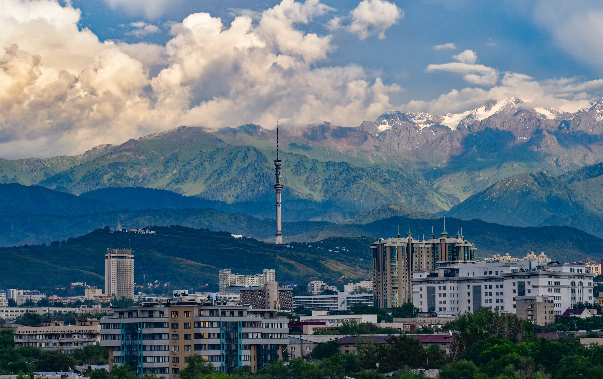
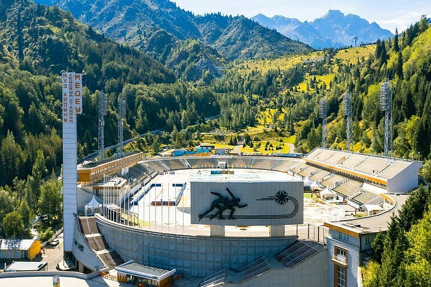

Welcome to Almaty
Why I love this city
Almaty is the largest city in Kazakhstan and it is surrounded by beautiful mountains. I like that you can see snowy peaks almost from every street. The city has many parks and a calm atmosphere even though it is a big city.
Location and nature
Almaty stands at the foot of the Trans-Ili Alatau mountains. Because of its location, the weather changes fast, but the air is fresh and clean, especially in the morning.
- Mountains around the city
- Many green parks
- Friendly and open people
- Walk in Panfilov Park
- Go up to Kok-Tobe hill
- Try local food at the Green Bazaar

